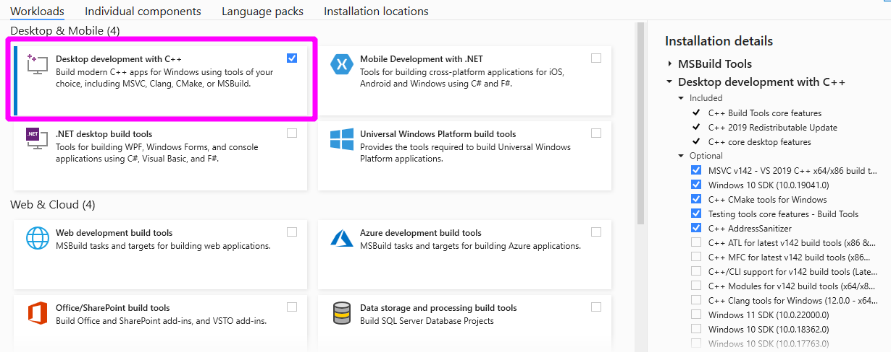

Set up your development environment#
Fork the scikit-learn repository#
First, you need to create an account on GitHub (if you do not already have one) and fork the project repository by clicking on the ‘Fork’ button near the top of the page. This creates a copy of the code under your account on the GitHub user account. For more details on how to fork a repository see this guide.
The following steps explain how to set up a local clone of your forked git repository and how to locally install scikit-learn according to your operating system.
Set up a local clone of your fork#
Clone your fork of the scikit-learn repo from your GitHub account to your local disk:
git clone https://github.com/YourLogin/scikit-learn.git # add --depth 1 if your connection is slow
and change into that directory:
cd scikit-learn
Next, add the upstream remote. This saves a reference to the main
scikit-learn repository, which you can use to keep your repository
synchronized with the latest changes (you’ll need this later in the Development workflow):
git remote add upstream https://github.com/scikit-learn/scikit-learn.git
Check that the upstream and origin remote aliases are configured correctly
by running:
git remote -v
This should display:
origin https://github.com/YourLogin/scikit-learn.git (fetch)
origin https://github.com/YourLogin/scikit-learn.git (push)
upstream https://github.com/scikit-learn/scikit-learn.git (fetch)
upstream https://github.com/scikit-learn/scikit-learn.git (push)
Set up a dedicated environment and install dependencies#
Using an isolated environment such as venv or conda makes it possible to install a specific version of scikit-learn with pip or conda and its dependencies, independently of any previously installed Python packages, which will avoid potential conflicts with other packages.
In addition to the required Python dependencies, you need to have a working C/C++ compiler with OpenMP support to build scikit-learn cython extensions. The platform-specific instructions below describe how to set up a suitable compiler and install the required packages.
First, you need to install a compiler with OpenMP support.
Download the Build Tools for Visual Studio installer
and run the downloaded vs_buildtools.exe file. During the installation you will
need to make sure you select “Desktop development with C++”, similarly to this
screenshot:

Next, Download and install the conda-forge installer (Miniforge) for your system. Conda-forge provides a conda-based distribution of Python and the most popular scientific libraries. Open the downloaded “Miniforge Prompt” and create a new conda environment with the required python packages:
conda create -n sklearn-dev -c conda-forge ^
python numpy scipy narwhals cython meson-python ninja ^
pytest pytest-cov ruff==0.12.2 mypy numpydoc ^
joblib threadpoolctl pre-commit
Activate the newly created conda environment:
conda activate sklearn-dev
First, you need to install a compiler with OpenMP support.
Download the Build Tools for Visual Studio installer
and run the downloaded vs_buildtools.exe file. During the installation you will
need to make sure you select “Desktop development with C++”, similarly to this
screenshot:
Next, install the 64-bit version of Python (3.11 or later), for instance from the official website.
Now create a virtual environment (venv) and install the required python packages:
python -m venv sklearn-dev
sklearn-dev\Scripts\activate # activate
pip install wheel numpy scipy cython meson-python ninja ^
pytest pytest-cov ruff==0.12.2 mypy numpydoc ^
joblib threadpoolctl pre-commit
The default C compiler on macOS does not directly support OpenMP. To enable the
installation of the compilers meta-package from the conda-forge channel,
which provides OpenMP-enabled C/C++ compilers based on the LLVM toolchain,
you first need to install the macOS command line tools:
xcode-select --install
Next, download and install the conda-forge installer (Miniforge) for your system. Conda-forge provides a conda-based distribution of Python and the most popular scientific libraries. Create a new conda environment with the required python packages:
conda create -n sklearn-dev -c conda-forge python \
numpy scipy cython meson-python ninja \
pytest pytest-cov ruff==0.12.2 mypy numpydoc \
joblib threadpoolctl compilers llvm-openmp pre-commit
and activate the newly created conda environment:
conda activate sklearn-dev
The default C compiler on macOS does not directly support OpenMP, so you first need to enable OpenMP support.
Install the macOS command line tools:
xcode-select --install
Next, install the LLVM OpenMP library with Homebrew:
brew install libomp
Install a recent version of Python (3.11 or later) using Homebrew
(brew install python) or by manually installing the package from the
official website.
Now create a virtual environment (venv) and install the required python packages:
python -m venv sklearn-dev
source sklearn-dev/bin/activate # activate
pip install wheel numpy scipy cython meson-python ninja \
pytest pytest-cov ruff==0.12.2 mypy numpydoc \
joblib threadpoolctl pre-commit
Download and install the conda-forge installer (Miniforge) for your system.
Conda-forge provides a conda-based distribution of Python and the most
popular scientific libraries.
Create a new conda environment with the required python packages
(including compilers for a working C/C++ compiler with OpenMP support):
conda create -n sklearn-dev -c conda-forge python \
numpy scipy cython meson-python ninja \
pytest pytest-cov ruff==0.12.2 mypy numpydoc \
joblib threadpoolctl compilers pre-commit
and activate the newly created environment:
conda activate sklearn-dev
To check your installed Python version, run:
python3 --version
If you don’t have Python 3.11 or later, please install python3
from your distribution’s package manager.
Next, you need to install the build dependencies, specifically a C/C++ compiler with OpenMP support for your system. Here you find the commands for the most widely used distributions:
On debian-based distributions (e.g., Ubuntu), the compiler is included in the
build-essentialpackage, and you also need the Python header files:sudo apt-get install build-essential python3-devOn redhat-based distributions (e.g. CentOS), install
gcc`for C and C++, as well as the Python header files:sudo yum -y install gcc gcc-c++ python3-develOn Arche Linux, the Python header files are already included in the python installation, and
gcc`includes the required compilers for C and C++:sudo pacman -S gcc
Now create a virtual environment (venv) and install the required python packages:
python -m venv sklearn-dev
source sklearn-dev/bin/activate # activate
pip install wheel numpy scipy cython meson-python ninja \
pytest pytest-cov ruff==0.12.2 mypy numpydoc \
joblib threadpoolctl pre-commit
Install editable version of scikit-learn#
Make sure you are in the scikit-learn directory
and your venv or conda sklearn-dev environment is activated.
You can now install an editable version of scikit-learn with pip:
pip install --editable . --verbose --no-build-isolation --config-settings editable-verbose=true
Note on --config-settings#
--config-settings editable-verbose=true is optional but recommended
to avoid surprises when you import sklearn. meson-python implements
editable installs by rebuilding sklearn when executing import sklearn.
With the recommended setting you will see a message when this happens,
rather than potentially waiting without feedback and wondering
what is taking so long. Bonus: this means you only have to run the pip
install command once, sklearn will automatically be rebuilt when
importing sklearn.
Note that --config-settings is only supported in pip version 23.1 or
later. To upgrade pip to a compatible version, run pip install -U pip.
To check your installation, make sure that the installed scikit-learn has a
version number ending with .dev0:
python -c "import sklearn; sklearn.show_versions()"
You should now have a working installation of scikit-learn and your git repository properly configured.
It can be useful to run the tests now (even though it will take some time) to verify your installation and to be aware of warnings and errors that are not related to you contribution:
pytest
For more information on testing, see also the Pull request checklist and Useful pytest aliases and flags.
Set up pre-commit#
Additionally, install the pre-commit hooks, which will automatically check your code for linting problems before each commit in the Development workflow:
pre-commit install